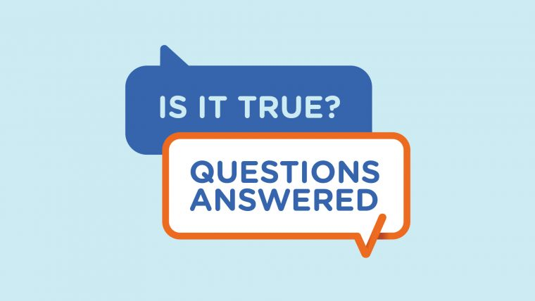

- 
- 1
- 2
- 3
The importance of credible information
We encourage you to rely on reputable sources of information to help you make informed choices and stay up to date on the latest information about COVID-19 vaccines.
The information below can help you make informed decisions – and get information from a trusted source. Our medical advisors provide these answers.
-
Do people who have had COVID-19 and recovered need to get vaccinated?
If you have had COVID-19 you should wait to be vaccinated with your next COVID-19 vaccine, either primary course or booster doses, 3 months after the confirmed infection.
-
Do kids need to get vaccinated if they don’t get severely ill from COVID-19?
There are many reasons why you may choose to get your child vaccinated against COVID-19.
-
How long will the COVID-19 vaccine last once I have had two doses?
It is not yet known how long the protection of the COVID-19 vaccine will last. We will know more through ongoing research. Clinical trials are currently happening to find out if we will need booster doses on an annual or longer basis.
-
How long does it take to have immunity after vaccination?
To receive the best protection against serious illness or death from COVID-19, You should stay up to date with all vaccinations recommended for your age or individual health needs.
-
Do COVID-19 vaccines cause autoimmune diseases?
Autoimmune diseases, such as arthritis and multiple sclerosis, are chronic (long-term) illnesses where our immune systems attack our own cells.
-
Do I have to wait between getting the Influenza (flu) and COVID-19 vaccine?
COVID-19 vaccines can be co-administered (that is, given on the same day) with an influenza vaccine.